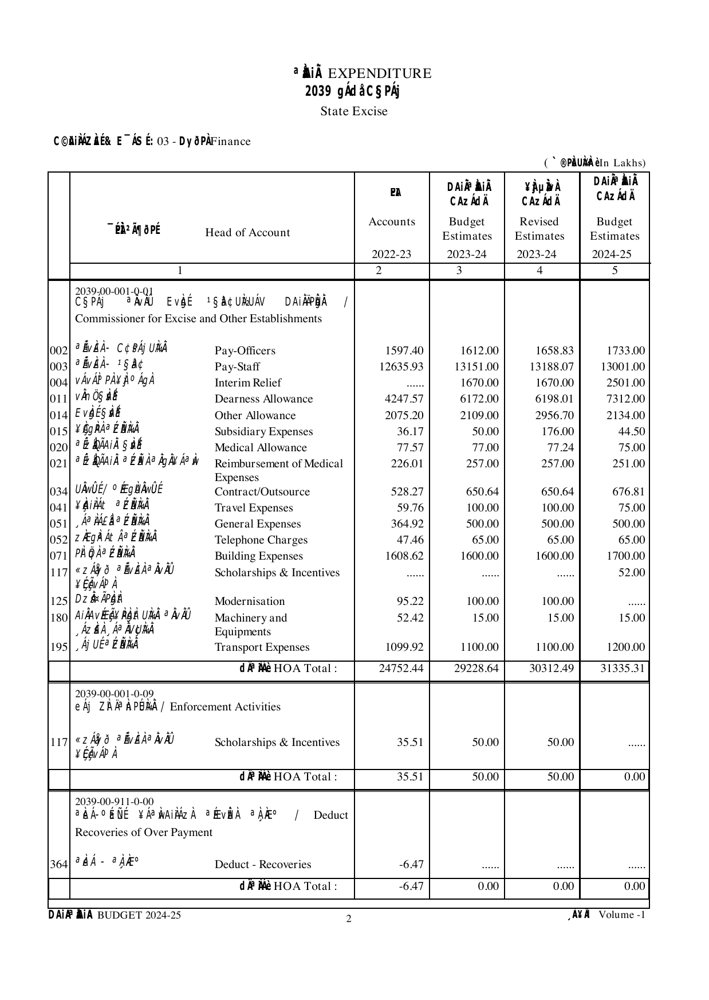

Which departments spend the most?
Rank departments by actual expenditure in 2024-25. Learn to group account entries by demand and convert lakh to crore.
India Public Finance
Budget figures sit across thousands of PDF pages. We turn those pages into structured tables, retain the source references, and check the accounting relationships. Researchers can then compare spending and explain what the budget means.
Research preview. Amounts are shown in ₹ crore at current prices. Karnataka covers 2018-19 to 2026-27; the state comparison also includes Tamil Nadu.
Use the companion repository's prepared table to reproduce an analysis, inspect its assumptions, and adapt the code to your question.
Rank departments by actual expenditure in 2024-25. Learn to group account entries by demand and convert lakh to crore.
Compare budget estimates, revised estimates and actual expenditure over time. The example combines Medical and Public Health with Family Welfare.
Classify expenditure by account code and calculate its share of total spending. Read the salary-code exclusions before extending the definition.
Compare demand totals across years and examine changes in rank. Separate financial years from document years to avoid repeated amounts.
Explore an example
Follow the same financial year across its budget estimate, revised estimate and actual expenditure. This example uses revenue heads 2210 and 2211. It excludes capital expenditure.
View the Python analysisLoading the worked example...

Working with the data
The illustrated guide explains account levels, financial columns and the rows that can be added together. Then run a short Python example using the repository's prepared data.
From the companion repository folder
python3 examples/src/python/hello_budget.pyEach document year contains four financial columns: actual expenditure from two years earlier, the previous budget estimate, the revised estimate, and the new budget estimate. The data package retains account codes and source page references so researchers can examine the figures in context.
Each check compares an extracted total with the sum of its detail rows. A pass means that the difference falls within the specified tolerance. Errors can still remain in figures that add up correctly. A source-page comparison is needed to establish whether the extraction is accurate.
| Account head |
|---|
The source tables record Karnataka amounts in lakh. The explorer divides them by 100 and displays nominal ₹ crore. Open a row to see the account levels beneath it. A dash means that the selected document does not print that figure.
Separate prevention and public-health programmes from clinical services within head 2210. Compare revenue spending with capital head 4210. These are research extensions that need a documented classification and source checks.
This query adds object-head entries by demand from a Karnataka package CSV. It excludes summary rows to avoid counting the same expenditure twice. Results are in lakh. Divide by 100 to convert them to crore.
Identify the source's account levels, financial columns, units and links between detail tables and summaries.
Specify the account path, amount, year, unit and source. Keep detail rows, totals, blanks and zeros distinct.
Extract source-linked records and reconcile the totals. Trace each failed check back through the processing steps.
Provide reusable tables, worked examples and source references. Report the checked scope and the errors that remain.
Related paper: Information Extraction From Fiscal Documents Using LLMs.
xKDR. India Public Finance Portal. Karnataka state budget data, 2018-19 to 2026-27. https://github.com/xKDR/india-public-finance-portal
Help extend the archive or improve an existing record. Start with the source document and describe the change so another researcher can check it.
For a data correction, include the state, account code, financial year, measure, unit and source page. Show the recorded value and the proposed correction.
Open a contribution issueThe repository is public. Reports open a tracked issue that maintainers can check against the source PDF.
Proposed corrections need source evidence and review before they enter a new data release. Report unresolved differences rather than changing an amount to make a check pass.
India Public Finance Portal is a project of xKDR. Data, code and this site are public on GitHub.